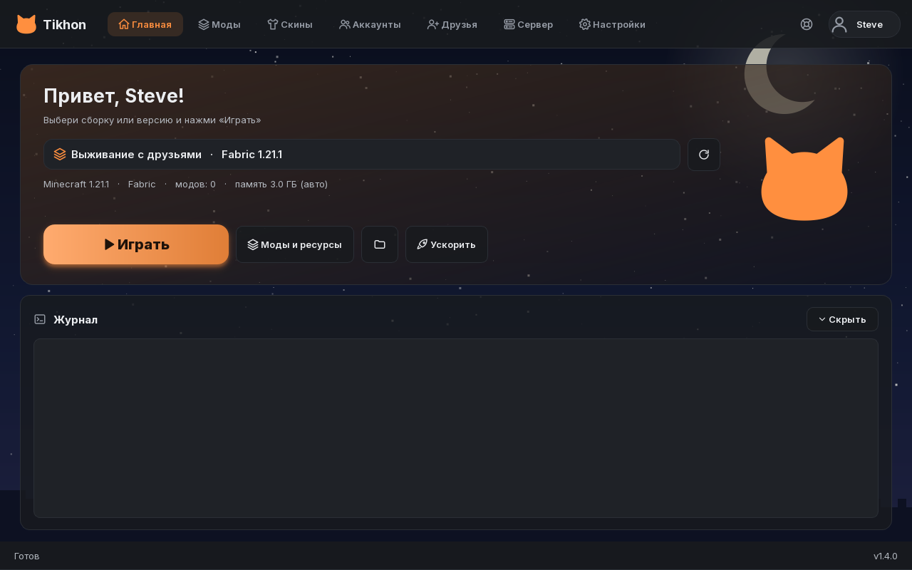
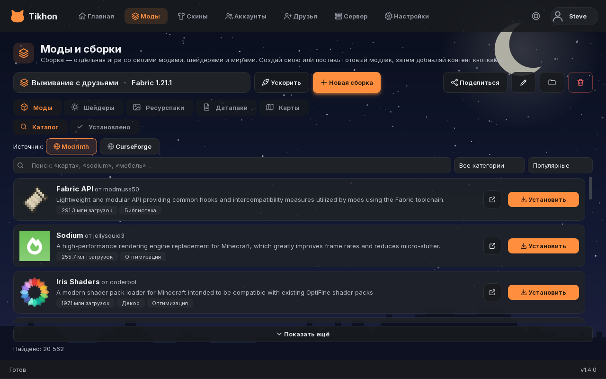
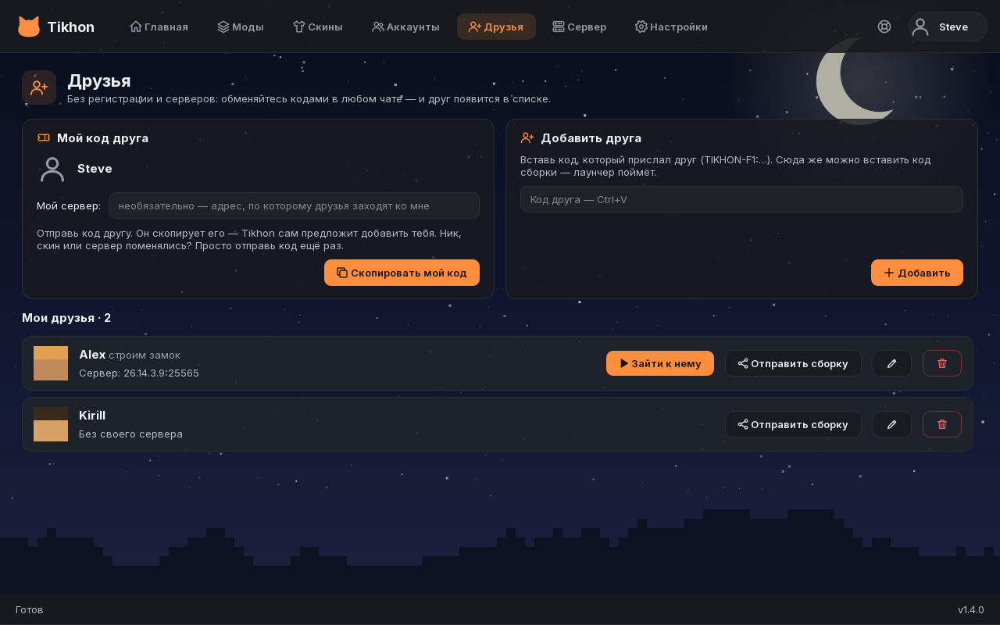
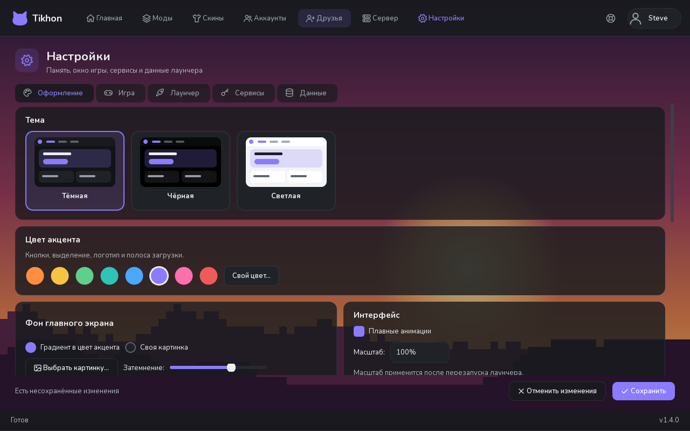
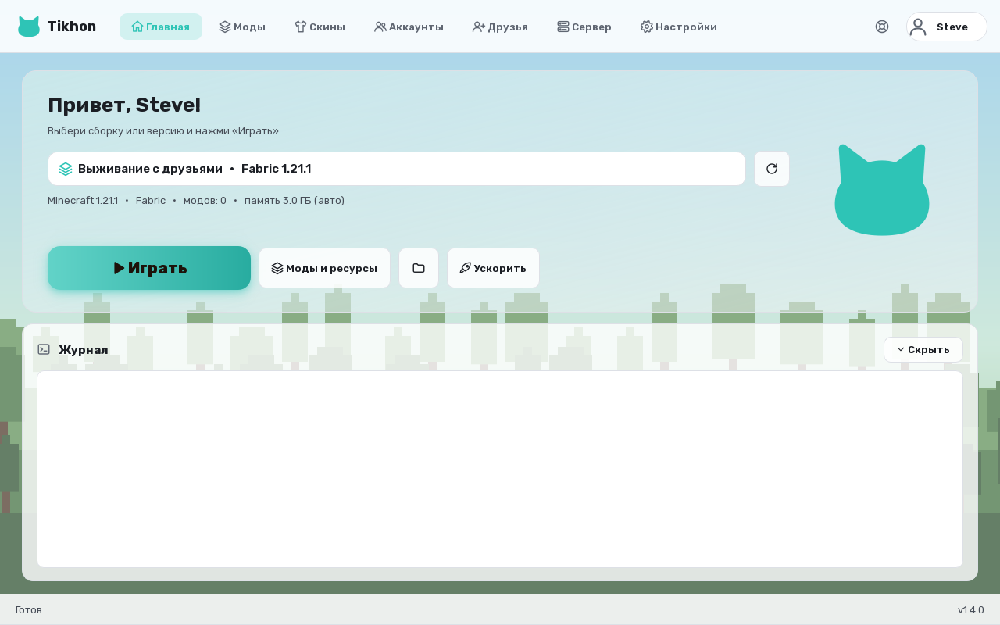

Minecraft с модами —
в пару кликов
Tikhon — бесплатный лаунчер на русском. Сборки с модами, шейдеры и ресурспаки из Modrinth и CurseForge, скины, свой сервер и друзья по коду — всё в одном окне.

Что умеет
Всё, что нужно, чтобы играть с модами и друзьями — без ручной возни с файлами.
Сборки с модами
Fabric, NeoForge, Forge и Quilt ставятся сами. Каждая сборка — отдельная игра со своими модами и мирами.
Modrinth и CurseForge
Каталог модов, шейдеров, ресурспаков, датапаков и карт с картинками — установка одной кнопкой, зависимости подтягиваются сами.
Ускорение
Память подбирается под сборку, оптимизированные настройки Java и моды-ускорители в один клик.
Друзья и сборки по коду
Обменяйтесь кодами в любом чате — без регистрации. Сборку можно отправить коротким кодом или файлом.
Свой сервер
Обычный или с модами вашей сборки — запускается кнопкой, клиентские моды на сервер не попадают.
Скины и аккаунты
Вход через Microsoft, Ely.by или по нику. Библиотека скинов с превью персонажа.
Под себя
Темы, любой цвет, обои на всё окно, шрифты с кириллицей и плавные анимации.
Обновляется сам
Новая версия — плашка «Обновить» в лаунчере. Всё хранится в одной папке рядом с программой.
Скриншоты
Нажми на картинку, чтобы увеличить.




Установка
Java ставить не нужно — лаунчер скачает всё сам.
Скачай установщик
Кнопка «Скачать для Windows» вверху страницы.
Запусти его
Если Windows покажет «Система Windows защитила ваш компьютер» — нажми «Подробнее» → «Выполнить в любом случае». Так бывает с программами без платной подписи.
Выбери ник и играй
Лаунчер встретит коротким приветствием: ник, оформление — и можно жать «Играть».
Вопросы
Это бесплатно?
Да, полностью. Лаунчер скачивает игру с официальных серверов Mojang, моды — с Modrinth и CurseForge.
Нужен ли купленный Minecraft?
Для игры на официальных серверах и входа через Microsoft — да, нужна купленная Minecraft: Java Edition. Кроме того, можно войти через Ely.by или играть по нику на своём сервере и в одиночной игре.
Куда устанавливаются игра и моды?
В папку data рядом с лаунчером: ничего не разбрасывается по системе, официальный .minecraft не трогается. Папку можно переносить целиком.
Как поиграть с другом?
В разделе «Друзья» обменяйтесь кодами, сборку отправьте кнопкой «Поделиться». Сервер запускается в разделе «Сервер»; если вы не в одной сети — подойдёт Radmin VPN или ZeroTier.
Что-то не работает
В лаунчере есть служба поддержки (кнопка со спасательным кругом): частые вопросы и отчёт об ошибке, который можно отправить разработчику.